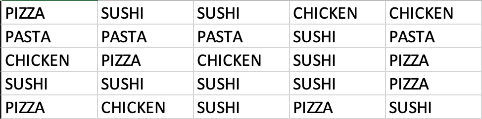
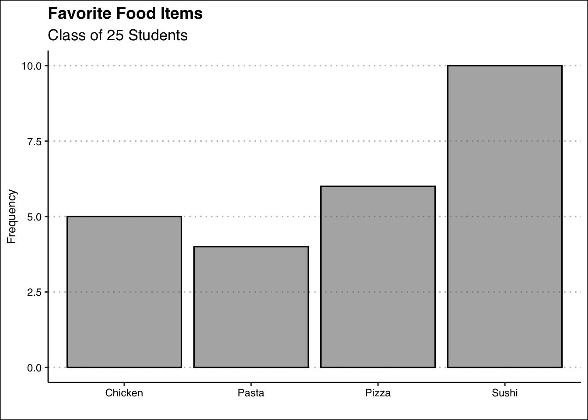
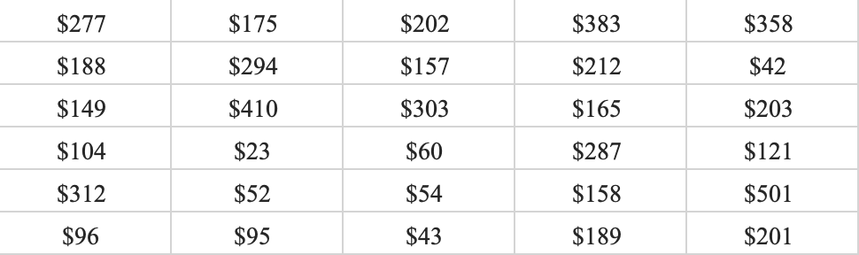
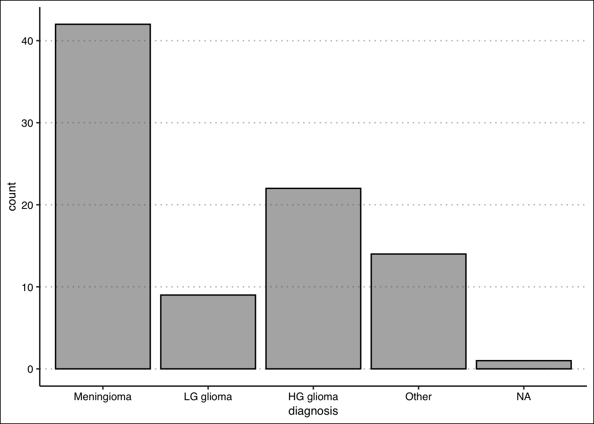
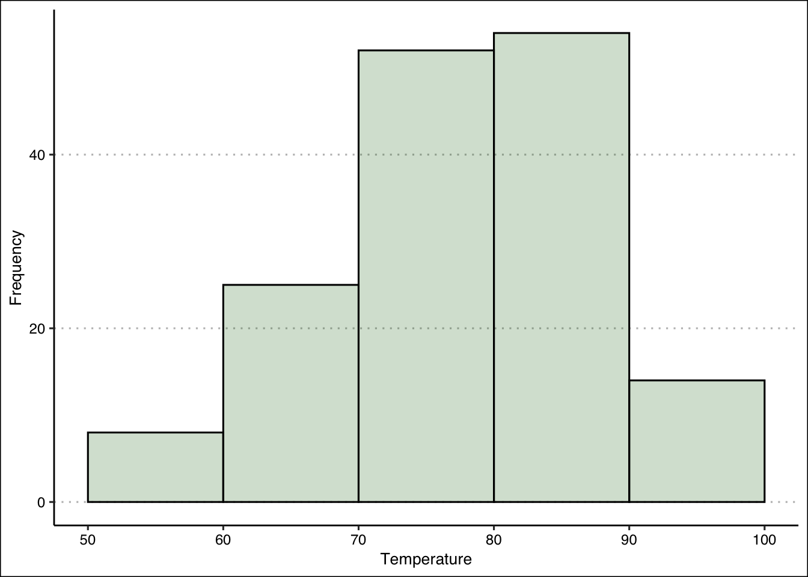
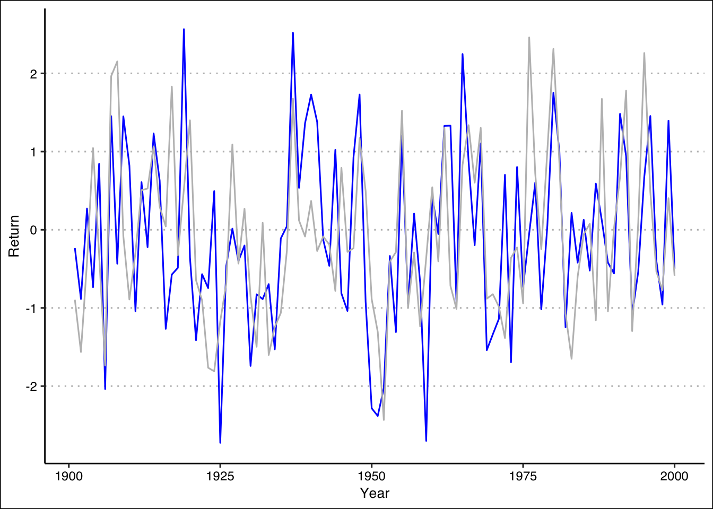
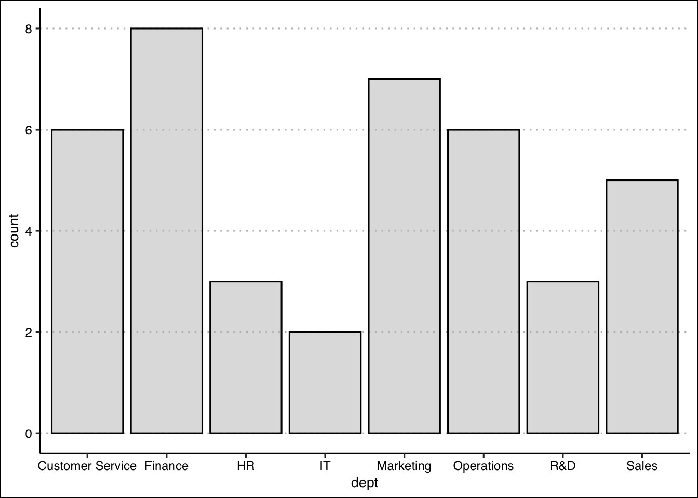

2 Descriptive Stats II
Understanding and visualizing data distributions is a fundamental step in data analysis. It provides critical insights into the underlying characteristics of the data, which directly impact decision-making, model performance, and interpretation. Below, we introduce tabular and visual techniques to describe your data.
2.1 Frequency Distributions (Categorical)
A frequency distribution is perhaps the most valuable tool for summarizing categorical data. It illustrates with a table the number of items within distinct, non-overlapping categories. An alternative known as the relative frequency quantifies the proportion of items in each category relative to the total number of observations. You can calculate it by taking the frequency of a particular class (\(f_{i}\)), and dividing it by the number of observations \(n\). Relative frequency helps contextualize the data by highlighting the significance of each category compared to the whole.
The frequency distribution can be illustrated by using a bar plot. A bar plot illustrates the frequency distribution (or relative frequency) of categorical data. It includes the classes in the horizontal axis and frequencies or relative frequencies in the vertical axis and has gaps between each bar.
Example: Consider data on students’ answers to the question, what is your favorite food? You can see the data below:
Simply observing raw data can make identifying the most and least popular items challenging. A frequency distribution organizes this information into a clear table, showcasing the popularity of each item. The frequency distribution of the table is displayed below:
| Food | Frequency | Relative |
|---|---|---|
| Chicken | 5 | 0.20 |
| Pasta | 4 | 0.16 |
| Pizza | 6 | 0.24 |
| Sushi | 10 | 0.40 |
Each food item is tallied up, and the result is shown in the frequency column. Alternately, we can show the tally as a proportion of the total (i.e., 25). For example, five students liked chicken; out of the 25 students surveyed, this represents 0.2 or 20%. This calculation is shown for each food item in the relative frequency column.
Below, you can see the bar graph showing the frequency distribution of the food items data. Note that the visualization is constructed by showing each food item as a bar with a height equal to the frequency.

2.2 Frequency Distributions (Numerical)
When working with numerical data, building a frequency distributions requires additional steps compared to categorical data. The challenge lies in the absence of predefined categories or classes. To construct a frequency distribution for numerical data, it is essential to determine the number, width, and limits of the classes. Here are the steps to create a frequency distribution when data is numerical:
1. Determine the Number of Classes: The number of classes can be estimated using the \(2^k\) rule, where \(k\) is the smallest integer such that \(2^k\) exceeds the total number of observations by the least amount. This ensures the chosen number of classes provides a reasonable level of granularity for summarizing the data.
Example: If a data set has 50 observations, we would choose six classes since \(2^6=64\) is greater than \(50\) by the least amount.
Alternatively, you can use Sturges’ rule to estimate the number of classes. This rule suggests using \(k = \lceil 1 + 3.322 \log_{10}(n) \rceil\) where \(n\) is the number of observations and \(\lceil \cdot \rceil\) denotes the ceiling function (round up to the nearest integer).
Example: If a data set has 50 observations, \(k = \lceil 1 + 3.322 \times 1.699 \approx 6.64 \rceil = 7\) so we would choose seven classes.
Note that the \(2^k\) rule and Sturges’ rule do not always produce the same number of classes. Either method is acceptable — what matters is that you choose one and apply it consistently throughout the rest of the frequency distribution construction.
2. Calculate the Width of Each Class: The width of a class is determined using the formula:
\[Width = \frac{Max-Min}{Number\ of\ Classes}\]
Example: If the data set has 50 observations and the minimum value 20 and the maximum is 78, then the width of each class is \(58/6 \approx 9.7\) when using the \(6\) classes suggested by the \(2^k\) rule. We can round up and use a class width of 10. It is important to note to always round up, as this ensures that all data points are included in an class.
3. Establish Class Limits: The class limits define the range of values in each class. These limits should be chosen such that each data point belongs to only one class.
Example: Consider a data set of 50 observations where each class has a width of 10. Set the class limits of the first class to [20,30). Note that the square bracket indicates that the point should be included in the class, whereas ) indicates that the point should not be included in the class. The six classes would be [20,30), [30,40), [40,50), [50,60), [60,70), and [70,80). By choosing these classes, each point belongs to only one class.
Determining the Classes for the Dow Jones Industrial
The Dow Jones Industrial Average (DJIA) is one of the most widely followed stock market indexes in the world. It tracks the stock prices of 30 large, well-known U.S. companies — such as Apple, Microsoft, and Goldman Sachs — and summarizes their collective performance into a single number. When people say “the market was up today,” they are often referring to the Dow. It serves as a barometer of the overall health of the U.S. economy and is updated continuously during trading hours.
Let’s look at a snapshot of the Dow Jones Industrial 30 stock prices. Below you can see the data:

Let’s follow the steps to build the frequency distribution.
1. Determine the Number of Classes: Here we choose five classes since \(2^5=32\) is greater than \(30\) by the least amount.
2. Calculate the Width of Each Class: The smallest values in the data set is \(23\) and the maximum is \(501\). This gives us a range of \(478\). Now we can just take the range and divide by five to get \(95.6\). To make things simple we can round to \(100\) and use a class width of \(100\).
3. Establish Class Limits: Since we have rounded up we can be flexible with our class limits. The following class limits are suggested [20,120), [120,220), [220,320), [320,420), and [420,520). Note that each class has a width of \(100\), and that each data point belongs to one single class.
2.3 Frequency Distributions and Bar Graphs in Excel (Categorical)
To construct frequency distributions in Excel, we will use pivot tables. A pivot table is an Excel tool that automatically summarizes and counts data, making it ideal for building frequency distributions. It allows you to quickly organize raw data into a structured table without writing any formulas.
Let’s use the food data to construct a frequency distribution. Download the data below and follow the steps to build the pivot table.
1. Select the Data: Select the data range in Excel while including the headers.
2. Insert a Pivot Table: Go to Insert → Pivot Chart. In the dialog box, confirm the data range and choose Existing Worksheet to place the pivot table next to the data. Click OK.
3. Configure the Pivot Table: In the PivotTable Fields panel on the right, drag the Favorite Food field to the Categories area and drag it again to the Values area. Excel will automatically count the occurrences of each food item, giving you the frequency distribution.
4. Add the Relative Frequency: Drag the Favorite Food field to the Values area a second time. By default, Excel will show it as a count. To convert it to a percentage, click on the field in the Values area and select Value Field Settings. Then click on the Show Values As tab and choose % of Column Total from the dropdown menu. Click OK. Excel will automatically display the proportion of each food item relative to the total, giving you the relative frequency distribution directly in the pivot table.
If you need more guidance please refer to the video demonstration below:
Video
2.4 Frequency Distributions and Histograms in Excel (Numerical)
To construct a frequency distribution for numerical data in Excel, we need an extra step compared to the categorical case. Since numerical data has no predefined categories, we must first create the bins manually using a helper column. Once the bins are in place, we can use a pivot table to count the observations in each class.
Let’s use the Dow Jones stock price data to construct a frequency distribution. Download the data below and follow the steps.
1. Create a Bin Column: In column C, add the header “Bins”. In cell C2, enter the following IFS formula to assign each stock price to its corresponding class:
=IFS(B2<120,"[20,120)",B2<220,"[120,220)",B2<320,"[220,320)",
B2<420,"[320,420)",B2<=520,"[420,520)")Copy the formula down for all 30 rows. Each stock price will now be assigned to one of the five classes defined in sec-freqdistnum. Press Ctrl + ~ to verify the formulas are correct, then press Ctrl + ~ again to return to normal view.
2. Insert a Pivot Table: Select the data. Go to Insert → PivotTable, confirm the data range, and select Existing Worksheet. Click OK.
3. Configure the Pivot Table: In the PivotTable Fields panel, drag the Bins field to the Rows area and drag it again to the Values area. Excel will count the number of stock prices in each bin, giving you the frequency distribution. Since the bin labels are text, Excel may sort them alphabetically, placing [120,220) before [20,120). To fix this, right-click on the [20,120) bin in the pivot table and select Move → Move to Beginning. The bins should now appear in the correct numerical order.
4. Add the Cumulative Distribution: Drag the Bins field to the Values area a second time. Click on the field in the Values area and select Value Field Settings. Click on the Show Values As tab and choose % Running Total In from the dropdown menu. Make sure the base field is set to Bins. Click OK. Excel will display the cumulative percentage for each bin, showing the proportion of stock prices that fall at or below each class. You should obtain the following frequency distribution:
| Bin | Frequency | Cumulative % |
|---|---|---|
| 1. [20,120) | 9 | 30.00% |
| 2. [120,220) | 12 | 70.00% |
| 3. [220,320) | 5 | 86.67% |
| 4. [320,420) | 3 | 96.67% |
| 5. [420,520) | 1 | 100.00% |
5. Insert a Histogram: With the pivot table selected, go to Insert → Charts → Clustered Column. Excel will generate a bar chart. To convert it into a proper histogram, right-click on any bar and select Format Data Series. Set the Gap Width to 0%. This removes the spaces between bars, which is the key visual distinction between a bar chart (used for categorical data) and a histogram (used for numerical data).
The video below walks you through each of these steps:
Video
2.5 Exercises
The following exercises will help you practice summarizing data with tables and simple graphs. In particular, the exercises work on:
Developing frequency distributions for both categorical and numerical data.
Constructing bar charts, histograms, and line charts.
Creating contingency tables.
Answers are provided below. Try not to peek until you have a formulated your own answer and double checked your work for any mistakes.
Exercise 1
You will need the Brain Cancer data set to answer this question. You can get the data using the link below:
- Construct a frequency and relative frequency table of the Diagnosis variable. What was the most common diagnosis? What percentage of the sample had this diagnosis?
Answer
The most common diagnosis is Meningioma, a slow-growing tumor that forms from the membranous layers surrounding the brain and spinal cord. The diagnosis represents about \(48.28\)% of the sample.
The frequency distribution should have the following numbers:
Meningioma LG glioma HG glioma Other
42 9 22 14 The relative frequency distribution has the following numbers:
Meningioma LG glioma HG glioma Other
0.4827586 0.1034483 0.2528736 0.1609195 - Construct a bar chart. Summarize the findings.
Answer
The majority of diagnosis are Meningioma. Low grade glioma is the least common of diagnosis. High grade glioma and other diagnosis have about the same frequency.

- Construct a contingency table that shows the Diagnosis along with the Status. Which diagnosis had the highest number of non-survivals (0)? What was the survival rate of this diagnosis?
Answer
\(33\) people did not survive Meningioma. The survival rate of Meningioma is only \(21.43\)%.
tThe contingency table for the two variables should have the following numbers:
Meningioma LG glioma HG glioma Other
0 33 5 5 9
1 9 4 17 5The survival rates are:
Meningioma LG glioma HG glioma Other
0 0.7857143 0.5555556 0.2272727 0.6428571
1 0.2142857 0.4444444 0.7727273 0.3571429Exercise 2
You will need the Air Quality data set to answer this question. You can get the data using the link below:
- Construct a frequency distribution for the Temp variable. Use five classes with widths of \(50<x\le60\); \(60<x\le70\); etc. Which interval had the highest frequency? How many times was the temperature between \(50\) and \(60\) degrees?
Answer
The highest frequency is in the \(80 < x ≤ 90\) bin. \(8\) temperatures were between \(50 < x ≤ 60\) degrees.
The frequency distribution should have the following numbers:
intervals
[50,60] (60,70] (70,80] (80,90] (90,100]
8 25 52 54 14 - Construct a relative frequency, cumulative frequency and the relative cumulative frequency distributions. What proportion of the time was Temp between \(50\) and \(60\) degrees? How many times was the Temp \(70\) degrees or less? What proportion of the time was Temp more than \(70\) degrees?
Answer
The temperature was \(5.22\)% of the time between \(50\) and \(60\); The temperature was \(70\) or less \(33\) times; The temperature was above \(70\), \(78.43\)% of the time.
The relative frequency distribution is given by:
intervals
[50,60] (60,70] (70,80] (80,90] (90,100]
0.05228758 0.16339869 0.33986928 0.35294118 0.09150327 Below the cumulative distribution numbers:
[50,60] (60,70] (70,80] (80,90] (90,100]
8 33 85 139 153 Lastly, the relative cumulative distribution:
[50,60] (60,70] (70,80] (80,90] (90,100]
0.05228758 0.21568627 0.55555556 0.90849673 1.00000000 - Construct the histogram. Is the distribution symmetric? If not, is it skewed to the left or right?
Answer
The distribution is not perfectly symmetric. It is skewed slightly to the left (see histogram.)

Exercise 3
You will need the Portfolio data set. You can get the data using the link below:
- Construct a line chart that shows the returns over time for each portfolio (X and Y) by using two lines each with a unique color. Assume the data is for the period \(1901\) to \(2000\). Include also a legend that matches colors to portfolios.
Answer
From \(1901\) through \(2000\), both portfolios have behaved very similarly. Returns are between \(-3\)% and \(3\)%, there is no trend, and positive (negative) returns for X seem to match with positive (negative) returns of Y.

Exercise 4
A company surveyed 40 employees about their primary department. The responses are saved in the Excel file below:
- Create a frequency distribution table for these departments.
Answer
dept
Customer Service Finance HR IT
6 8 3 2
Marketing Operations R&D Sales
7 6 3 5 - Compute the relative frequencies (as percentages).
Answer
dept
Customer Service Finance HR IT
15.0 20.0 7.5 5.0
Marketing Operations R&D Sales
17.5 15.0 7.5 12.5 - Create a bar plot of the frequencies. Which department has the highest frequency? What is its relative frequency (percentage)?
Answer

The highest frequency is in the Finance department with 8 employees. The relative frequency is 20%.
Exercise 5
A class of 50 students took a business statistics exam (out of 100 points). Their scores were recorded in Excel:
- Construct a histogram using 7 classes with width 10, starting at 50 (bins: [50,60), [60,70), etc.). In which bin is the highest frequency? How many students scored in that range?
Answer

The highest frequency is in the bin (60,70] with 9 students.